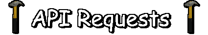

Achieve Build Mode Level Data
local http_service = game:GetService("HttpService");
local request = http_service:PostAsync("https://stan105.github.io/api/v1/buildmode/get_bm_data/VM4LBOE0A");
if (request) then
print(request.BuildModeLevelName);
end;
-- Available Level Data Content:
-- BuildModeLevelName Name of the Level
-- BuildModeLevelDesc Description of the Level
-- BuildModeLevelAuthor Author of the Level's Username
-- BuildModeLevelAuthorID Author of the Level's User ID
-- BuildModeLevelData Full Data of the Level
-- Other Level Data Content:
-- BuildModeLevelVersion Version of when the Level was published / updated
-- BuildModeLikePercent The like-dislike-ratio in percent (0-100%)